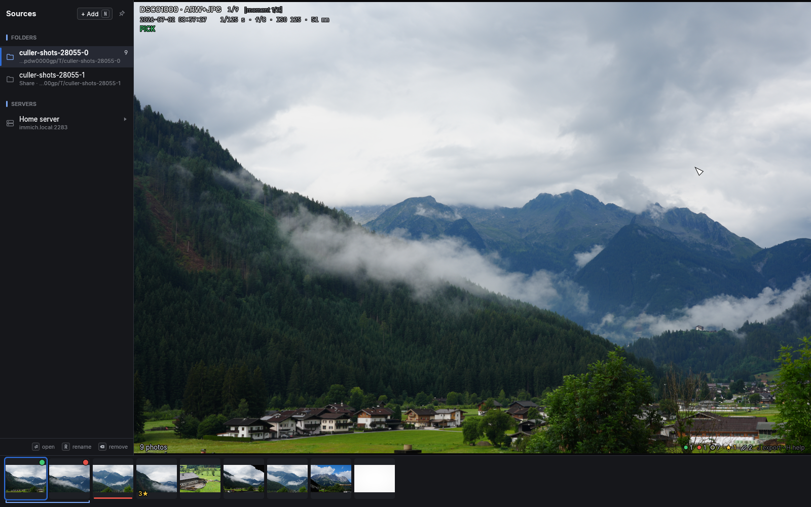
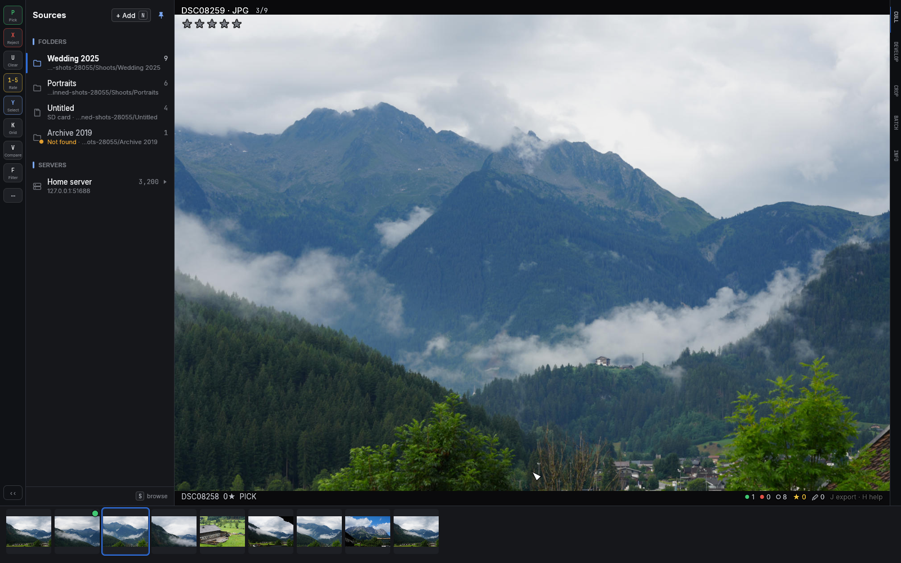
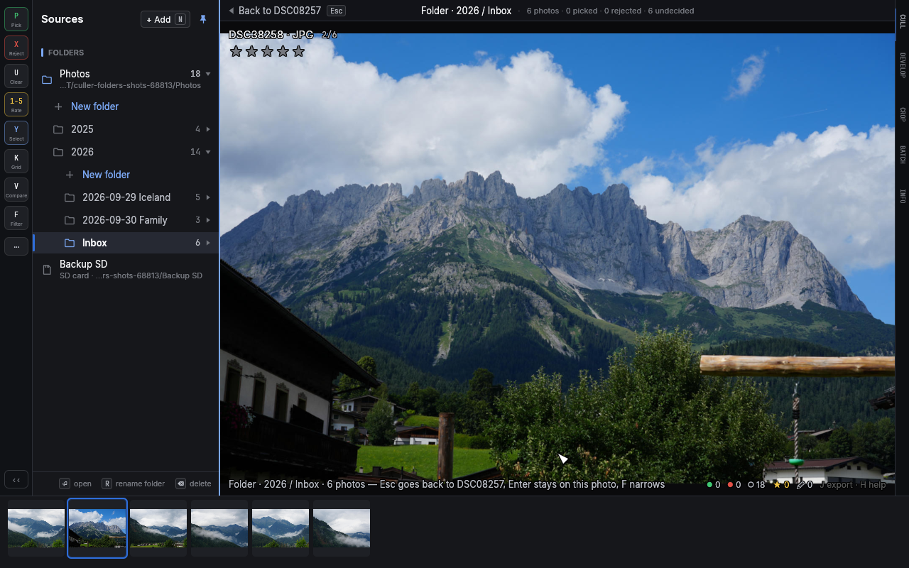

Sources
S opens the sources pane: the saved places you cull from. While it's
open it owns the keyboard — ↑/↓ select, Enter opens, Esc closes.
If you switch folders a lot, you can
keep the pane open beside the photos instead.

The pane lists a connected camera first (when there is one), then your
Folders — folders, cards and shares — and your Servers, each
row with a small icon for its kind, its name, and underneath where it
lives (your home folder shows as ~, and a long path is shortened from
the front so the folder's own name stays visible). The source you have
open is marked with a blue bar. A row shows a status mark only when
something is wrong — an amber dot when a source is out of reach for now
(a drive or card not plugged in, a server that didn't answer the last
time), a red one when you need to act (a server that rejected its API
key) — and the reason is always spelled out beside it. While a source is
scanning, a spinner takes its icon's place with the progress underneath.
The strip at the bottom of the pane shows the keys for the row you're on.
The number on the right of a row is its photo count. For the source you
have open it's the live count; for every other source it's the count
from the last time you opened it — shown a shade dimmer until you've
opened that source in this session — and a source culler has never
counted shows no number at all rather than a guess. culler never looks
inside a folder you don't have open just to count it (on macOS that
would set off permission prompts for folders like Downloads and for
cards and shares); when the pane opens it only checks, in the
background, that each saved folder is still there. A large server that
loads in windows shows its total with a ~ — it's the server's own
estimate.
Keeping the panel open
If you move between folders all the time, pin the pane: click the pin
at its top right, beside + Add — or turn on Settings → Sources →
Keep the sources panel open (Cmd+,). Pinned, the pane stays docked
beside the photos, between the key rail and the picture, and no longer
closes when you open a source. Switching folders stops moving the photo
sideways, a switch with the mouse is one click on a row, and a switch
from the Grid keeps the Grid.

A pinned pane is passive until you ask for it. The keyboard is in one of two places:
- With the photos — the default. Every key does what it always does;
the pane just shows which source is open (the blue bar), and its foot
reads
Sbrowse. - In the pane — press
S(or choose File → Sources… in the Mac menu bar; pinned, it works from the Grid too, and the Grid stays). A row cursor appears on the open source, the pane's inner edge turns into a light-blue strip, and the foot shows the keys for the row you're on.↑/↓move,→/←expand and collapse, andN,Rand⌫work as they do in the unpinned pane.Enteropens the row and hands the keys back to the photos;EscorShand them back without opening anything. Any other key does nothing here — the status line reminds you where the keys are.
The mouse never takes the keys away from the photos: clicking a row opens
it and you carry on culling; clicking a chevron, + Add or the pin does
just that. Clicking the row that is already open does nothing (S, then
Enter on it re-scans the source). Clicking anywhere outside the pane
brings the keys back to the photos. Only a text field — the add form, a
rename — has the keyboard while you type in it. Cmd-shortcuts and
Shift+S (jump to date) work the same wherever the keys are.
The pane steps aside by itself, and comes back by itself:
- When the photo would get too narrow — under 560 px wide: a narrow window, or a smaller one with Develop, Info or Batch open. The status line says so the first time. Widen the window, close the pane on the right, or collapse the key rail, and it docks again.
- In Compare, Survey, Match series and crop, in sort mode, and during a tethered session. It returns when you leave them.
While it's aside for lack of room, or during a tethered session, S
opens the pane the ordinary way — it owns the keys and closes when you
open something — and its pin stays lit to say it's still pinned.
A pane that never closes checks that your saved folders are still there
at three moments instead of on opening: when it comes back into view, when
you press S, and when you come back to culler from another app (after
plugging in a drive, say).
With nothing open yet — a fresh launch — the pinned pane has the keys,
like the unpinned one. To unpin, click the pin again (or untick the
setting): the pane closes, and S opens it as before. Pinning is off by
default.
Folders, cards and shares
- + Add beside the heading (or
N) adds a local folder, a network share, or an SD card — mounted volumes with aDCIMfolder are auto-detected and named after the card. With nothing saved yet the pane says so and offers one Add source button instead. - Cards, shares and servers get a deeper prefetch window and more decode workers, since their latency, not your CPU, is the bottleneck.
- Folders opened from the command line or with
Ostay ad-hoc — they are never silently saved. Add them explicitly if you want them to stick. Backspaceremoves the selected source: the first press arms (the row turns red), the second confirms — or click the × that appears at the row's end under the pointer, twice. Only the registry entry is removed — your photos and sidecars are untouched.Rrenames the selected source in place — the name becomes an edit field with the whole name selected; type the new name,Enterkeeps it,Escreverts. Names matter most with several Immich servers: the upload destination dropdown shows them, so "Home NAS" reads better there than an IP and port.- Each source remembers your position and filter, so switching back resumes where you left off.
Folders inside a folder
The folder you have open can show the folders inside it. Its row gets a
chevron: → (or a click on the chevron) lists its subfolders as
indented rows beneath it, each with its photo count, three levels deep
(→ and ← open and close each level; from a folder inside, ← closes
the one it sits in). The list and its counts come from the photos culler
already scanned when you opened the source, so drawing it reads nothing
on disk — and a folder you haven't opened never expands, so macOS never
asks about folders you only keep in the list. The flip side: a folder
with no photos in it doesn't show — unless you made it, or sorted it
empty, during this session.

Enter on a subfolder (or a click on it) opens it — with the folders
below it — as the view: a strip above the photo says which folder
("Folder · 2026 / Inbox"), its row carries the blue bar while its
source's icon lights, and Esc (or a click on the strip) brings the
whole source back with the cursor where you left it. The batch panel
offers the folder as This view (N). Opening another subfolder from
the pane switches straight to it — Esc still goes all the way back —
and Enter on the source's own row, or a click on it, goes back to the
whole folder too (a second Enter re-scans it as before). The counts
are live: sort photos out of an Inbox and its number drops; a folder you
sort empty stays in the list, without a number.
On the open folder's own row R still renames the source's label,
never the folder on disk — the foot of the pane says R rename label
there.
Making a folder. The first row under the open folder is + New
folder, and every folder you expand inside it starts its own list with
one too (a folder with no subfolders yet expands onto just that row).
Enter on it (or a click) turns it into a name field: type the name,
Enter makes the folder right there — inside the folder the row heads
— and the cursor lands on it; Esc cancels. culler refuses, under the
field, a name that's empty, one starting with a dot (culler skips hidden
folders, so it would hide its own photos) or one containing a slash, and
a name something in that folder already has — on a disk that ignores
upper and lower case, iceland is taken when Iceland exists. A folder
you make shows in the list straight away, without a number until photos
are in it; sort into it with a sort destination or the
batch panel's Copy / Move.
Renaming a folder. R on a folder row renames the folder on
disk (Enter keeps the new name, Esc reverts). The photos inside it
are the same files under a new path, so culler then re-scans the source
— the status line says "Renamed 'Inbox' to 'Triage' — rescanned." If you
were culling inside that folder you stay in it, on the same photo. Some
renames are refused, with the reason on the status line, because
something culler keeps would be left pointing at the old name: the
folder is a sort destination or a saved source, or it holds one, the
export folder, the tether sessions or mirror folder; and while a batch,
a sort or a J is still running, it asks you to wait. A taken name is
refused like a new folder's. Renaming back undoes it.
Deleting an empty folder. ⌫ on a folder row arms it — the row
turns faintly red and reads "press ⌫ again to delete this empty
folder" — and a second ⌫ deletes it. culler only ever deletes a folder
with nothing in it, and checks the disk at the moment of the second
press: a folder with photos in it is refused straight away ("'Inbox'
isn't empty — 212 photos. Move or trash them first."), and one that only
looks empty is refused naming what is really there — another file, a
subfolder, or a hidden file such as the .DS_Store macOS leaves in a
folder you have browsed ("'Notes' isn't empty — 1 other file and 1
hidden file."). Photos leave a
folder through Sort mode or the batch panel's Move and Trash, where you
see the count first; then the empty folder can go. Esc (or any other
key) stands the arm down. The same things that refuse a rename refuse a
delete. A folder you delete can be made again with + New folder.
macOS folder permissions
The first time you add a source, macOS's folder picker grants access automatically. If that folder lives on your Desktop, in Documents/Downloads, on an SD card, or on a network drive, macOS may ask again the next time you open culler — that's expected: the system is re-confirming direct access outside the picker, not reporting a bug. Click Allow (or approve it under System Settings → Privacy & Security → Files and Folders) and it won't ask again for that folder.
Immich
Add an Immich server with its URL, an API key, and an optional name
(left empty, the server's address becomes the name — the field's hint
shows exactly what you'd get; R in the pane renames later). Test &
add checks the URL and key against the server before saving. The key
goes into the OS keychain (macOS Keychain / Windows Credential Manager),
not into a file on disk. To rotate a key later, add the same server
again with the new key — the existing entry updates in place and keeps
its name, albums and cursor memory. That is also the fix when a server's
row reads API key rejected (the key was revoked or lost permissions)
or Key unreadable (this copy of culler can no longer read the key
from the keychain — a reinstalled or rebuilt app can lose that access):
add the server again with a working key.
Test & add also reports the server's compatibility: culler is built and tested against Immich v2 and v3, and the confirmation line tells you whether your server is fully supported or falls outside that range. If a saved server is outside the tested range, opening it repeats the caution in the scan-warning pill — browsing and culling still work, but archive, edit upload, and stacks are the parts that may need a culler update. You always know what will and won't work before relying on it.
To create the key: in the Immich web app, click your avatar → Account Settings → API Keys → New API Key. The simplest choice is to grant all permissions — culler reads, rates, uploads and trashes on your behalf, so a broadly-scoped key is what the integration expects. If you prefer a scoped key, this is what each part of culler needs (permission names as of current Immich; older servers only offer all-powerful keys):
| To be able to… | the key needs |
|---|---|
| browse and cull (incl. stepping into stacks) | asset.read, asset.view, asset.download, timeline.read, album.read, stack.read, user.read |
| sync picks, stars and archive | asset.update |
| move rejects to the server trash | asset.delete |
| upload (including edited JPEGs, with stacking) | asset.upload, albumAsset.create, stack.create, stack.delete |
put photos into albums and take them out (Shift+I) | albumAsset.create, albumAsset.delete |
| create, rename or delete albums — only for managing albums; nothing above needs these | album.create, album.update, album.delete |
A key missing a write permission surfaces the server's error where the operation lives: batch failures in the status line, sync failures in the pending-work pill (where the sync queue keeps retrying until the key is fixed). For anything that changes an album the message names the permission — "the API key lacks the albumAsset.delete permission" — so you know which box to tick, instead of a generic "check the API key".
One case deserves its own warning, because Immich adds permissions over
time: a key created before your server knew about stacks doesn't gain
stack.create when the server upgrades — even if you ticked every box
at the time. Uploads then succeed but pairs land unstacked, reported as
"uploaded, but could not stack" warnings. Add stack.create and
stack.delete to the key (Account Settings → API Keys) and re-run the
upload — the server dedupes the already-sent photos and just creates
the stacks.
Culling a server works exactly like culling a folder — the server renders
the previews, culler streams them through a local disk cache (revisits
are instant), and the keys are the same. Opening a big timeline is
immediate: the first thousand photos appear within about a second and
you can start culling right away while the rest stream in behind them
(the pending-work pill counts the scan — that's culler reading the
server's catalog, not downloading your photos; image bytes are only
ever fetched around where you're looking. New photos append at the
end, and the library settles into capture-time order once everything
has arrived, without moving the photo you're on). If some pages fail to
load — a straining server, a network blip — culler keeps everything
that arrived and the pill tells you how much is missing, which pages
failed and why (the server's actual error), and how to retry; you
never lose a loaded timeline to one bad request. When it keeps
happening, the same per-page causes land in culler's
diagnostic log
(~/.culler/logs/culler.log) and on the console — look for lines
tagged [scan] to see exactly what the server said. Videos are left
out: culler is a photo culler.
RAW+JPEG shot pairs that live on the server as two separate assets are
culled as one photo, exactly like a local folder pairs them: the
camera JPEG is what you see, the overlay says so ("DSC09 · ARW+JPG" —
every remote photo shows its file kind there), and whole-photo actions
(rating, archive, trash, download) cover both assets. The server's own
stack grouping counts too: a pair stacked on the server (culler's
uploads arrive that way) is the same one photo, and a stack holding
more — an edit version, extra frames — shows its cover with a
member-count badge and G step-into. When a stack contains a RAW, the
develop panel grades that RAW, exactly like a plain pair — also from an
album that holds only the render: the RAW comes from the
server's stack membership, so develop and J work there too. The timeline
orders newest first, matching the server's own view, and stacks
group as the scan streams in — not only when it finishes.
The difference from a folder is where state goes:
Write-through sync
Ratings, picks and labels write through to the server as you press the
keys: picks become Immich favorites, stars become the server rating. A
failed write retries on its own; while anything is queued or failing, the
pending-work pill says
so. Develop settings and crops stay local — they travel only when you
export or upload (edit round-trip).
Quit with any of those still unsaved and culler reminds you once: the
first Quit is held back, and the status line says how many server edits
haven't been saved with J. Press Quit again to leave them for later —
they stay in culler's own state file, nothing is lost — or save first.
Because those edits wait for J, culler keeps count. A server source's
row in the sources pane reads "12 unsaved" after its address — the
photos whose develop or crop hasn't been saved to the server yet — for
every server you've added, not only the open one. Landmark points on
their own don't count: the reference of a series
you placed points on but never cropped or graded would otherwise have to
upload a fresh copy of an untouched photo just to carry them. Its points
stay in culler's state file on this computer, and travel to the server
the next time that photo is saved with J for a crop or a grade. The
same number lives in the bottom-right corner on every screen, as a
blue "12 unsaved" chip that totals all your servers: click it to see
the open server's unsaved photos (Shift+U is the key; either again
returns to All), or rest the pointer on it for the per-server breakdown
and click a server to open it straight onto them. Ratings and picks never
count (they sync on their own), folders never show the number (a folder
saves as you go), and it disappears at zero. The count is exact within
seconds of opening a server: culler checks every edited photo it hasn't
proven saved against the server in the background (one at a time, never
in your way) — photos whose saved grade matches drop out, photos deleted
on the server are forgotten, and the rest stay counted. Until that check
runs, the number can read high for a server you haven't opened since
this version.
Albums
Press → on an Immich row (or click its ▸ chevron) to expand the
server's albums as indented sub-rows with their photo counts; ←
collapses (from an album row it also jumps back to the parent). Open an
album with Enter to cull just that album — the album's row then
carries the blue bar, and its server's icon lights up.
An album is a view, not a separate library: same photos, same state. A
rating you set inside an album is simply there when you reopen the full
timeline, previews already fetched don't re-download, and each album
remembers its own position and filter. Album lists are fetched fresh per
session (albums change on the server); if the fetch fails, the row says
so and → retries. There is one list per server, shared by this pane,
the album picker and the Upload card, and it refreshes by itself
whenever culler changes an album — put a photo into an album with the
picker and that album's count follows in all three, without closing or
reopening anything. Changes made elsewhere (the server's own web app,
another device) show up the next time the list loads — and with the
panel kept open, every time the keys come back
into it or the window comes back to the front.
Managing albums. An expanded server's first row is + New album:
press Enter (or click it), type a name, Enter again — the album is
made on the server and the cursor lands on it. Esc cancels. culler
refuses an empty name and a name another album already has (any
capitalization), saying so right under the field; the server itself
would take both. R on an album row renames the album on the server,
in the same inline field.
⌫ on an album row deletes it — the one thing here you can't undo, so
it takes two presses and the row says what happens before the second:
it turns solid red and reads "⌫ again deletes this album — 96 photos
stay on the server · Albums can't be restored from culler." The photos
are untouched (they stay on the server and in every other album); the
album, its order and its sharing are gone for good. Esc, or any other
key, stands it down. culler only deletes an album you own that isn't
shared: on a shared one ⌫ says "'Family' is shared with 2 people —
culler won't delete a shared album", and the album you have open says
to open something else first.
Albums shared with you by someone else show their owner after the name
("Trip to Lisbon · Anna"). If you can only view one, R and ⌫ say whose
it is instead of trying ("'Trip to Lisbon' belongs to Anna — only Anna
can rename or delete it"); if you can edit it, you can rename it and file
photos into it, but only its owner can delete it. The hint strip at the
pane's foot only offers what the selected album allows.
When the server refuses — a key without the permission, an album deleted from another device a moment ago — culler says which and why: "This key can't create albums — it needs the album.create permission. Add it to the key in the server's Account Settings → API Keys." (under the name field, which keeps what you typed), or "'Iceland 2026' was deleted on the server — list refreshed."
An album that was deleted on the server after its row loaded can't be opened: the status line says "that album no longer exists, or you don't have access to it", the row drops out of the list, and the server's own row stays as it was — one dead album doesn't mark the server as failing.
Stacks: G
Stacked assets (RAW+JPEG groups, edit versions) show their cover with a
member-count badge. G steps into the stack — the members become the
view — and G or Esc steps back out. Rejecting inside a stack stays
local until you archive or trash via the
apply panel; some actions (Compare, Survey,
the apply panel itself) are unavailable inside a stack.
Large Immich libraries
A library past a few thousand photos doesn't load whole. culler loads the newest stretch first — you're culling in seconds — and older months stream in on demand: scroll or arrow toward the end of what's loaded and the next window fetches by itself, with a quiet chip past the filmstrip's tail (and a band under the grid's last row) naming what's next — "2,500 more in Jun 2026". Click it to load without waiting, click again if a fetch fails.
To go straight to a date, press Shift+S — a Jump to date picker
lists every month with photos and its exact count. Type to filter ("mar",
"2025"), ↑/↓ to choose, Enter jumps, Esc cancels. A month already
loaded is a plain cursor move; an unloaded month fetches just that
month's window — the picker stays up with a small "Loading … "
spinner for the moment that takes, then closes by itself and lands you on
the month (Esc while it loads cancels the jump; the fetched photos
still arrive quietly). The months in between stay unloaded, marked by a
divider in the timeline ("⋯ 2,500 more in Jun 2026") that loads on click,
or automatically as you browse toward it. The view stays in newest-first
order throughout.
The sources pane row shows the library's total on the right ("~6,500")
and how much of it is loaded underneath ("1,412 loaded"), with a thin
progress line under it and a Load all link at its end, which keeps
loading window after window until the whole library is in (click again
to stop). None
of this applies to albums or smaller libraries — they load whole, and
Shift+S does nothing there.
The info panel on Immich sources
The info panel (I) grows an extra
section on Immich sources: description, recognized people, album
membership, favorite state and the capture location. People and album
membership are fetched per photo the moment you focus it (never during
the scan), so a slow server delays only those two rows — everything
else is already there. If that fetch fails the panel reads "Couldn't
load people & albums"; focusing another photo and coming back retries.
A photo the server has already confirmed has no albums or no
recognized people just shows nothing there — same as any other empty
field in the panel, never a dash or an "unavailable".
Editing the description: click the description in the info panel —
an empty one reads "Add a description" — to edit it in place, the
whole text starting selected so typing replaces it. Click anywhere else
to save; Esc throws the edit away. Enter starts a new line
(descriptions are prose), which is why clicking away is the save
gesture. The edit is written to the photo's display asset
on the server; clearing the text clears it there too.
The locked folder (Immich v3 and newer): the info panel offers Move to locked folder for sensitive photos — the whole RAW+JPEG pair moves behind Immich's PIN in one step and disappears from culler's view immediately. Be aware that culler cannot see, browse or unlock a locked photo afterwards: bringing it back is done in Immich's own web app. On servers without a locked folder (v2) the action simply isn't there.
Sorting into albums mid-cull: Shift+I opens the album picker
— the panel's album list becomes togglable (with the mouse: the
Add to album… ⇧I button in the panel's Albums section). ↑/↓
move, Space (or Enter) acts on the selected row, typing filters the
list, Esc closes. The line above the list says what the picker acts
on.
One photo: a check marks the albums it is in, and Space toggles it
in or out. Toggles apply immediately — the whole RAW+JPEG pair moves as
one — and a toggle the server refuses flips back with the reason in the
status line. The picker reports what the server actually did, not just
that it answered: a photo the server won't let you add or remove
(someone else's photo in a shared album, say) flips back and says "no
permission"; a photo that turns out to be in the album already keeps
its check and reads "already in … — nothing added"; an album that was
deleted in the meantime reads "that album no longer exists, or you
don't have access to it". The picker never auto-closes: sort a photo
into several albums in one visit.
A selection: when the photo you're on is part of a
selection, the picker files every selected photo
("12 selected · adds them to an album"). Space on an album adds them
all in one go and reports what happened — "Filed 12 into 'Iceland 2026'
· 3 were already in it", or which ones the server refused — and the
album keeps a check for the rest of the visit.
A new album: type a name no album has and the last row offers
+ New album 'Westfjords'; Enter on it makes the album with the
photo or selection already in it. It is always the last row, so typing
part of a name ("ice") and pressing Enter files into the first match,
never into a stray new album. On that row Space types a space, for
names of more than one word.
Inside an album: the first row is Remove from this album (with a
selection, "Remove 12 from this album"). One photo goes at once; a
selection asks once — the row turns red, "Space again removes 12 from
Iceland 2026", and Esc stands it down. The photos leave the album and
the view right away; they stay on the server and in every other album.
If you can't remove some of them — photos someone else added to an
album shared with you — they stay, and the status line says so
("Removed 2 of 3 from 'Family' — 1 was added by someone else"). Trash in
the batch panel is a different thing: it deletes photos from the
server, not just from the album, and the panel says so when an album is
open.
Tethered shooting (USB camera)
Plug a supported camera in over USB (on Sony bodies: USB mode → Remote
Shoot (PC Remote), and for RAW+JPEG set Still Img. Save Dest. to
PC+Camera with RAW+J PC Save Img on RAW & JPEG) and it appears at the
top of the sources pane as a camera row (a small camera icon). Press
Enter on it and a tethered session starts: culler creates a dated
folder under ~/Pictures/Culler Tether/ (one per day — reopening the
same day reuses it) and opens it as the active source. From that
moment, every picture you take lands in culler within about a
second, RAW+JPEG pair complete, appearing at the end of the
filmstrip. If you're sitting on the newest shot, the view follows each
arrival; if you've stepped back to compare earlier frames, it stays
put and a quiet +N new tag over the filmstrip counts what's waiting
(click it, or press End, to catch up). Everything else is ordinary
culling — rate, flag, develop, and upload picks to Immich while you
shoot.
Past sessions — continue, rename, clean up. Every session lives in
its own dated folder, and the camera row remembers them: as soon as a
first session folder exists, the row grows a chevron — → (or a
click) expands it into the past sessions, newest first, each with its
photo count. No camera plugged in? The same slot shows a Tether
sessions row instead — Enter (or →) expands the same list, so
yesterday's shoot is always a pane away; opening a session then just
opens its folder, and plugging the camera back in picks it up from
there. Enter on one continues it: with the camera connected,
new shots land in that folder again (a session running elsewhere ends
silently first); with the camera unplugged, the folder opens as an
ordinary source so you can keep culling it — once the camera is back,
Enter on the session again resumes shooting into it. R renames a
session inline — the folder on disk is renamed, and a name that's
already taken is refused with the reason under the row. ⌫ deletes
one with a second confirming press: the row turns red and spells out
exactly what will happen — the folder goes to the system Trash, not
deleted outright, so it's recoverable there if you change your mind.
The session that's live or currently open refuses rename and delete
(end or leave it first), and while the Mirror is still sending photos
from a session, deleting it waits until that finishes. The pinned
+ New session row forces a fresh folder even on the same day — the
second session of 2026-08-20 becomes 2026-08-20-2, and so on.
Mirror — automatic backup as you shoot. The rail's Mirror button (visible while a session is live) sends every photo to a second home the moment its RAW+JPEG pair finishes landing — an Immich server, any saved source, or a folder you pick. The cell glows when mirroring is on, the corner shows the running tally ("mirror 7/9"), and the corner pill narrates the file in flight. A photo mirrors exactly once, as shot — later edits stay local until you upload them yourself. If a send fails it retries a few times, then steps aside so newer shots keep mirroring; the tally turns amber and the ordinary batch upload catches stragglers later (already-stored files skip in milliseconds). The setting is remembered — every new session announces "mirroring to …" in the status line so it's never on without you knowing.
Timer — interval shooting, self-timer, bulb. The rail's Timer button (below Mirror while a session is live) opens three tools: Interval shooting fires the remote shutter every N seconds (5s minimum — each shot takes about 4s to focus, fire, and land), until stopped or for a set count, with the running tally in the corner ("timer 12 of 40 · next 0:04"); Self-timer fires once after 2/5/10 seconds, counting down in the corner pill so you can get in front of the lens; Bulb exposure holds the shutter open for as long as you choose, timed from the laptop — the corner and pill show elapsed time, and Release now ends it early (you still get the photo). Bulb only starts when culler can confirm the camera is set to Bulb and Single drive — otherwise it tells you what to change instead of pretending. Esc cancels a counting self-timer or a running bulb exposure; a running interval stops from the Timer button (so a stray Esc can't kill a timelapse). Your last-used interval and bulb duration are remembered.
The camera row's second line keeps you honest about the connection:
after each transfer it shows the measured speed ("34 MB/s"), with
a "slow link" tag when transfers crawl. While the session is live the
bottom-right corner also shows the camera's own vitals — battery, and
shots remaining where the camera reports it — turning amber when
either runs low. For the full picture, press I — the info panel's
Camera rows show what the body is set to right now (shutter,
aperture, ISO, exposure compensation, drive mode), its battery, the
last transfer speed, and the negotiated USB link ("USB 2.0 ·
480 Mb/s"), which is how you catch a fast camera plugged into a slow
port or cable; a USB 2 link gets a plain nudge that a USB 3
port/cable would be faster. Turn a dial on the camera and the numbers
follow within a couple of seconds. Transfers never block culling; a
slower RAW shows the same per-file progress line in the corner pill
that uploads use.
Those Camera rows aren't just a readout — while the session is live they grow − / + steppers, so you can set aperture, shutter speed, ISO (including back to Auto), exposure compensation, and white balance from the keyboard-and-mouse side of the tether. Each step moves to the next value the camera itself says is available right now, so you can never ask for a setting the body would refuse. A freshly stepped value shows in the accent color for the beat it takes the camera to confirm; if the body refuses (wrong mode dial, typically), the corner pill tells you why and the row falls back to what the camera actually did. The camera's own dials always win — turn one and the rows follow.
With the camera on manual focus, [ and ] nudge focus nearer
and farther in small steps — Shift+[ / Shift+] take big steps for
coarse travel, Cmd+[ / Cmd+] fine ones for the last breath of
focus. The keys appear on the left rail while they're available and
do nothing on AF (the camera would refuse). One trap worth knowing:
set MF on the body (Fn or menu → Focus Mode → MF) with the lens's
AF/MF switch left on AF. Flipping the switch on the lens barrel also
reports MF, but it hands the focus motor to the ring alone — the
camera then politely accepts remote focus commands and moves nothing. Combined with the remote shutter this
is a full touch-free loop: frame, focus, fire — without a hand on the
camera.
Culler's remote-control features (shutter, Hold Focus, the Timer, the exposure steppers, focus nudging) currently speak Sony's control protocol and appear only for Sony bodies. Any other PTP camera still tethers fully for ingest — start a session and shots land as you take them — the control surfaces are simply absent, and the shutter key says so instead of pretending.
Remote shutter: while a session is live, Shift+Space fires the
camera from the keyboard (also on the left rail and in the ▾ More
menu). The gesture takes about 2.5 seconds — the camera genuinely
needs a long half-press to focus — and the pill narrates it
(Focusing… → Capturing… → the photo appears). If nothing arrives,
the pill says no frame — check focus or drive mode: in
focus-priority the camera refuses to fire without focus lock.
Hold Focus (L) removes that delay for the shots that matter.
Press L once and culler parks the camera's half-press: focus locks
(or keeps tracking, in AF-C) and stays that way — the AF-L cell on
the rail lights up and the corner shows focus held. From then on
every Shift+Space is just the shutter click, firing the instant you
press it, as many times as you like; timer and self-timer shots use
the held focus too. Press L again to let go. The mode is available
with the camera on autofocus (on manual focus the trigger is already
instant), and culler always releases the half-press when the session
ends or you quit — the camera is never left with a phantom finger on
its shutter. One honest limit: focus held means the button is held,
not that the subject is sharp — recompose too far and the camera will
still refuse the shot in focus-priority.
Live view (B) turns the culling screen into a viewfinder
between shots: press B during a session and a continuous preview
from the camera replaces the photo — same filmstrip, same shutter
keys, so you can frame, fire with Shift+Space, and keep watching.
When a shot lands it holds the screen for a moment (tagged
reviewing), then the stream resumes on its own; B skips the
review, and any arrow key, view key or a filmstrip click simply
returns you to your photos. The stream pauses by itself while the
camera is focusing, capturing or transferring — the corner pill
narrates those as usual — and if the camera is unplugged the view
waits and resumes on reconnect. Live view is available for camera
models culler can stream from; on others B says so and tethered
ingest continues unchanged.
A session ends with Backspace on the camera row (single press —
nothing is deleted, the photos stay on disk), or simply by opening any
other source. Unplugging mid-session is harmless: the row grays out,
everything already transferred stays, and replugging resumes into the
same session. The session folder is an ordinary folder — reopen it any
time via O or add it as a persisted source with N if you want it
in the list.